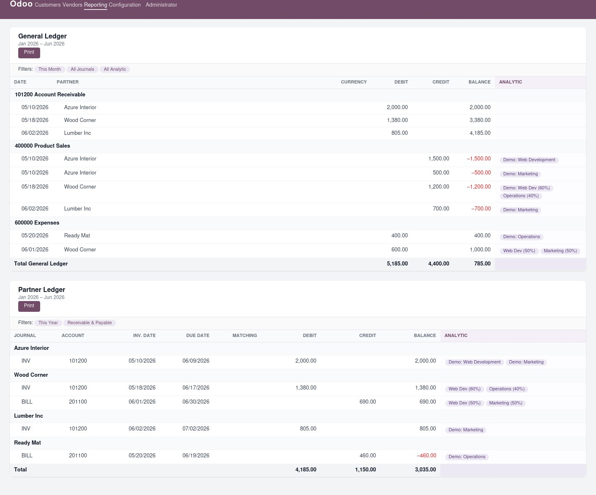

Adds an Analytic column to the General Ledger and Partner Ledger reports, so you can see which analytic accounts (projects, departments, cost centres) are linked to every journal entry line — at a glance.
By default, Odoo's General Ledger and Partner Ledger show financial figures but hide the analytic dimension. This module adds a dedicated Analytic column to both reports, displaying the analytic accounts and split percentages for each journal entry line.
For the Partner Ledger — where receivable/payable lines rarely carry analytic data directly — the module automatically looks up the analytic distribution from the counterpart income/expense lines of the same journal entry, so the information is always visible without any manual setup.
Each unfolded journal entry line now shows its analytic accounts with split percentages (e.g. Marketing (60%), Operations (40%)).
Even when the receivable/payable line has no analytic, the module fetches it from the matching income/expense lines of the same move.
Analytic data is loaded in a single additional query per report page, keeping rendering fast even on large datasets.
Ships with 5 posted invoices & bills and 3 analytic accounts so the feature is immediately visible after installation with demo data.

General Ledger (top) and Partner Ledger (bottom) — the highlighted Analytic column shows project/cost-centre allocations per line.
Depends on account_reports and analytic.
Both columns and expressions are added automatically via data records —
no configuration required.
Go to Accounting → Reporting → General Ledger. Unfold any account to see the Analytic column on each journal entry line.
Go to Accounting → Reporting → Partner Ledger. Unfold any partner to see the Analytic column derived from the matching revenue/expense lines.
account.general.ledger.report.handler —
overrides _report_custom_engine_general_ledger() to inject
analytic_distribution via a batch query at the AML level.
account.partner.ledger.report.handler —
uses the official _get_additional_column_aml_values() hook
plus a post-processing step in _get_aml_values() for
move-level fallback.
_format_analytic_distribution() is added to
account.report.custom.handler so all report handlers inherit it.
figure_type="string" and renders account names with optional
percentage splits (e.g. Marketing (60%), Operations (40%)).